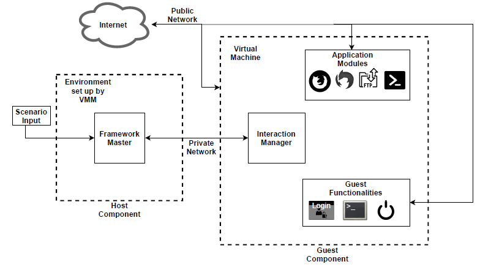

Framework Architecture¶
This chapter will detail the key components and workflow of ForTrace as well as relate the currently available features and functions. To get a more technical overview of key functions, you can view the corresponding chapter here: Developer reference.
ForTrace aims to synthesize forensically relevant data by simulating regular user interactions. To accomplish this, ForTrace operates as a layered system, sending requests for functions from the host to the guest layer. The guest layer then calls the corresponding functions, simulating keystrokes and other human-to-computer interactions to create the desired data. This virtualized guest layer is realized as one or multiple virtual machine instances (clones of previously prepared templates, see guestinstall) using KVM (Kernel-based Virtual Machine). ForTrace itself is programmed entirely in Python, as an OS-independent programming language was needed.
Architecture¶

Framework client-server architecture.
ForTrace uses a common client-host architecture. The host side’s Framework Master is used to manage and run the virtual machines representing the guest side. The guest side is completely automated from startup to shutdown and is run by the Interaction Manager, a component that simulates all inputs and keystrokes.
The figure above shows how these two components interact. The host side runs a specific scenario, which will, as a first step, create the needed guest instances by creating clones of the appropriate virtual machine templates. Each simulated user is represented by an isolated virtual machine instance. The framework master will then transmit the needed commands to the interaction manager of each guest, which in turn will execute these commands to generate the artifacts using the application specified in the host side scenario. As every guest is isolated, every instance can generate a separate set of artifacts.
As can be seen in the graphic, the connection between the host and client is separated from the client’s internet connection. This is done to minimize the simulation’s footprint on the generated network data. The IP addresses and other related information can be adjusted in the constants.py file.
Additionally, the host side is used to evaluate the created data using the reporting function (see Architecture of ForTrace) and the .pcap file created by the automated use of tcpdump. Additionally, it is possible to extract a memory dump using the guest_dump function at any time during a scenario.

In-depth graphic of ForTrace’s data synthesis procedure.
The figure above gives a detailed step-by-step overview of the data synthesis procedure in ForTrace.
- The vmm class assists in setting up all needed guest environments, ensuring all functions and values are in order and creating a listen socket for all interfaces for the agent on all guests.
- The guest class loads values from constants.py to create and later control the scenario-specific guest instances.
- MAC addresses are linked to IP addresses and stored within the libvirt config files.
- The local network for communication between guest/s and host and the network internet for communication between guest/s and the internet are created.
- Guest class uses libvirt to create the guest instances specified in the input scenario with help of the prepared templates.
- Guest class causes the created guest instances to load their respective interaction models.
- The interaction models are executed - this means the virtual machines are started and tcpdump begins recording all traffic.
- The guest instances are connected to the virtual machines.
- The traffic within each VM is generated through the interaction manager’s execution of the respective scenarios.
- The scenarios have completed and the simulation is over. Tcpdump stops recording and the virtual machines are shut down.
- The virtual machines and network interfaces are deleted. (This step is optional. We recommend deleting the virtual machines if you are solely interested in memory or network data.)
The following diagram gives some additional insight into the workflow of a general simulation lifecycle.

General ForTrace workflow.
Image Generation¶
ForTrace is able to simulate the use of several common user applications. In addition to that, ForTrace can manipulate the system clock to simulate system usage over user-chosen time interval. To track all modifications applied to a disk image, ForTrace provides a log file with all relevant information and hash sums. The generated images are distributed in the qemu format, meaning they are smaller snapshots of a larger base image, limiting the required disk space.
Features and Functions¶
To run ForTrace, we recommend a Ubuntu host machine. The virtualized guests ForTrace is currently capable of using to generate forensic artifacts are Ubuntu, Windows 7 and Windows 10. Additionally, ForTrace supports the following common applications for data synthesis:
| Module | Available functions / user actions |
|---|---|
| Guest/Agent/VMM | Create and clone virtual machine |
| Establish connection to VM | |
| Start, shutdown, restart VM | |
| Execute other modules | |
| Execute arbitrary commands via CLI/Linux Bash (e.g. SSH) | |
| Set OS time and date | |
| Send keystrokes | |
| Create network traffic dump (automated) | |
| Create memory dump | |
| File System | Copy, move, delete files and folders |
| Change directory | |
| Empty recycle bin | |
| Secure delete files and folders (SDelete) | |
| File Transfer | Transfer files between guest and SMB share |
| Transfer files between guest and (S)FTP share | |
| Transfer files between guest and NFS share | |
| User management | Add, delete, change local accounts |
| Logon, logoff desired user | |
| PowerShell | Install, uninstall a program |
| Launch, terminate a program | |
| Enable, disable UAC | |
| Open Windows explorer | |
| Search for keyword | |
| Attach, detach USB devices | |
| Connect, mount, unmount a network drive | |
| Basic file and folder manipulation | |
| Printer | Setup software network printer |
| Print files | |
| Anti Forensics | Disable, delete Event Log history |
| Disable Hibernation file | |
| Disable Page file | |
| Disable, empty Recycle bin | |
| Disable, delete Prefetch files | |
| Disable, delete Recent files | |
| Disable, delete Thumbcache | |
| Disable, delete MRUs/User Assist | |
| Disable, delete File History or Volume Shadow Copy | |
| Clear jump lists | |
| Set, manipulate, delete arbitrary Registry keys | |
| Malware Synthesis | Set up environment (Web server, DNS server, C&C server) |
| Deliver Malware (via dropper, email, download) | |
| Use persistence mechanisms (search order hijacking, service creation, Registry manipulation) | |
| Execute various commands (upload, download, …) | |
| Firefox | Open, close browser |
| Browse to one, multiple, specific or random websites | |
| Perform downloads and “right click save as” operations | |
| Click elements via ID, xpath | |
| Perform logins | |
| Thunderbird | Open, close mail application |
| Add IMAP, POP3 accounts | |
| Send, receive emails (with or without attachments) | |
| Fill mailbox artificially | |
| VeraCrypt | Create encrypted container |
| Mount, unmount encrypted container | |
| Transfer data to encrypted container | |
| Pidgin | Instant messaging via IRC, Jabber, Bonjour, … |
ForTrace is able to use Firefox to perform common web browsing actions to generate traffic such as browsing to and navigating webpages, e.g. browsing to a video or audio streaming site. ForTrace is also able to download files from websites. Navigation of a page can be performer through multiple ways, including the use of xpath variables.
With the Thunderbird application ForTrace is able to perform common email tasks such as sending and receiving emails as well as logging into an email account of the user’s choice. The service VM contains a mailserver that can be used to send unencrypted mails. This allows analysis of both mail traffic and content.
SSH/SFTP protocols are usable by ForTrace to transfer data from or to servers. ForTrace is built with the capability to use both Linux Bash and Windows command line.
VeraCrypt has been implemented as a tool to generate images rather than network traffic. As of right now, image generation is only possible for Windows guests.
Multiple common Botnet simulation attacks such as Mariposa, Zeus, Asprox or Waledac have already been implemented into ForTrace to generate network dumps of an attack from the victim’s side. It is also possible to add new attack variants.
SMB file transfer uses the tool Samba to move data to a network drive. This drive is located on the service VM. Since SMB file transfers are usually not encrypted, the traffic and content can be easily analyzed.
IPP print job is a simulation of an attack in which confidential documents are printed through a network printer. For this, the service VM is set up with ippserver as a virtual network printer.
Powershell is a powerful Windows tool that can be used to manipulate almost everything on the Windows VM .
Malware synthesis uses an additional Service VM to establish connections between the infected guest VM and the simulated attacker.
The Anti forensics module can be used to hide manipulation or obscure obvious artifacts.